Advanced Imaging.
Clearer Insights.
Better Care.
Experience professional diagnostic imaging with advanced X-ray, ultrasound, and ECG facilities, designed around patient comfort, clinical precision, and instant doctor access.
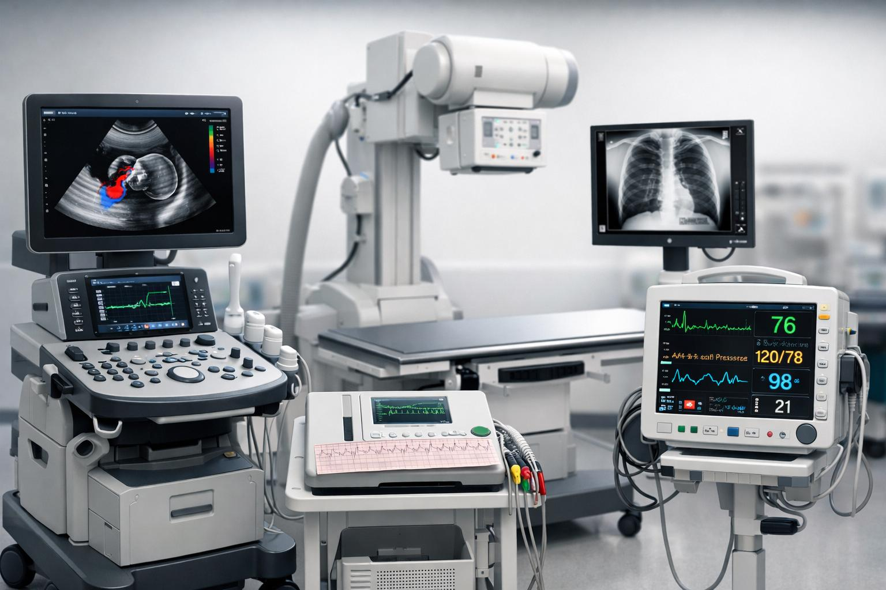
03Clinical Precision Standard
Calibrated Digital Imaging ArchitectureEvery imaging procedure combines low-dose cesium iodide flat-panel detectors, wideband acoustic beamforming, and DICOM-calibrated radiologist reading consoles.
Modern Diagnostics Designed Around You
At our diagnostic center, every imaging procedure is executed using calibrated digital equipment that minimizes radiation exposure while maximizing anatomical detail for rapid, accurate clinical diagnosis.
Modern Imaging Technology
Equipped with high-frequency digital X-ray generators and multi-probe ultrasound transducers.
Patient-Friendly Environment
Hygienic suites, private changing cubicles, and compassionate radiographer assistance.
Professional Workflows
DICOM-compliant PACS integration enabling instant specialist cross-consultations.
Convenient Assistance
Zero-wait appointment coordination and digital report delivery to your smartphone.
Explore Our Diagnostic Capabilities
From routine chest radiography to specialized musculoskeletal evaluations and 12-lead electrocardiography, our department delivers comprehensive diagnostic solutions.
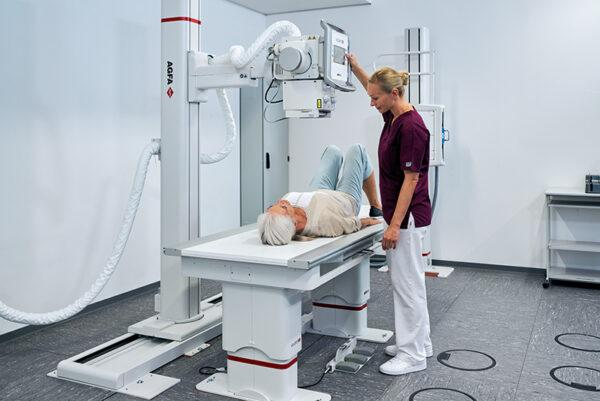
Instant PreviewHigh-frequency digital radiography for skeletal, chest, and joint imaging with minimal exposure and immediate crystal-clear image acquisition.
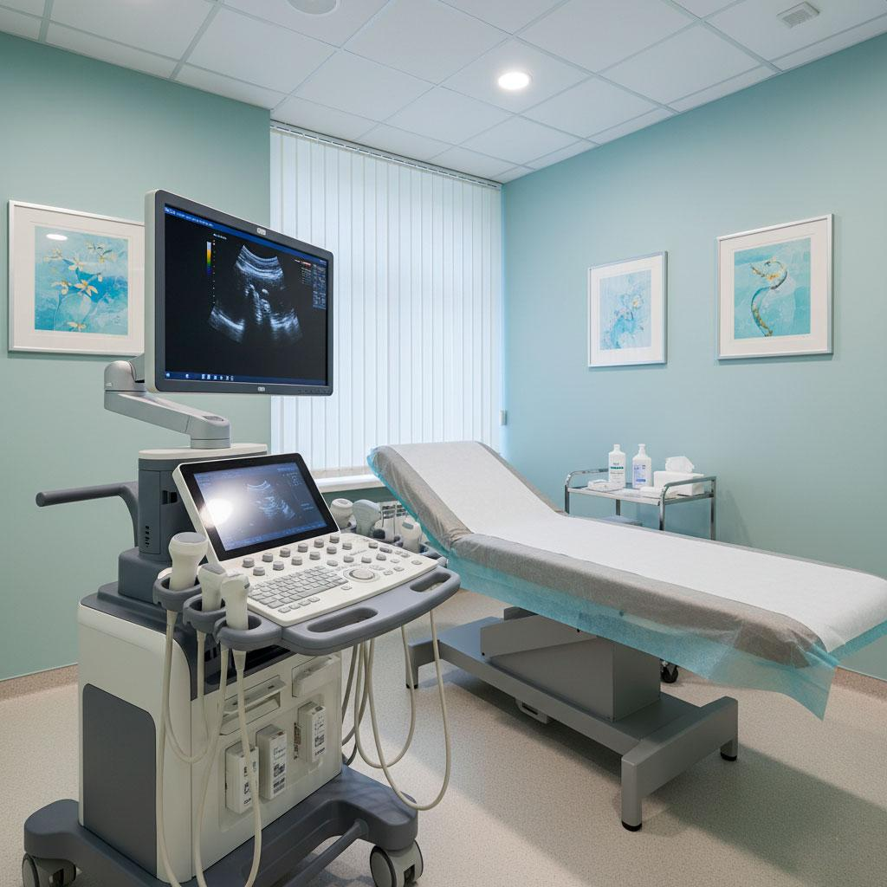
Radiation-FreeNon-invasive sound wave imaging for abdominal organs, pelvic structures, obstetric growth assessment, and color Doppler vascular evaluations.
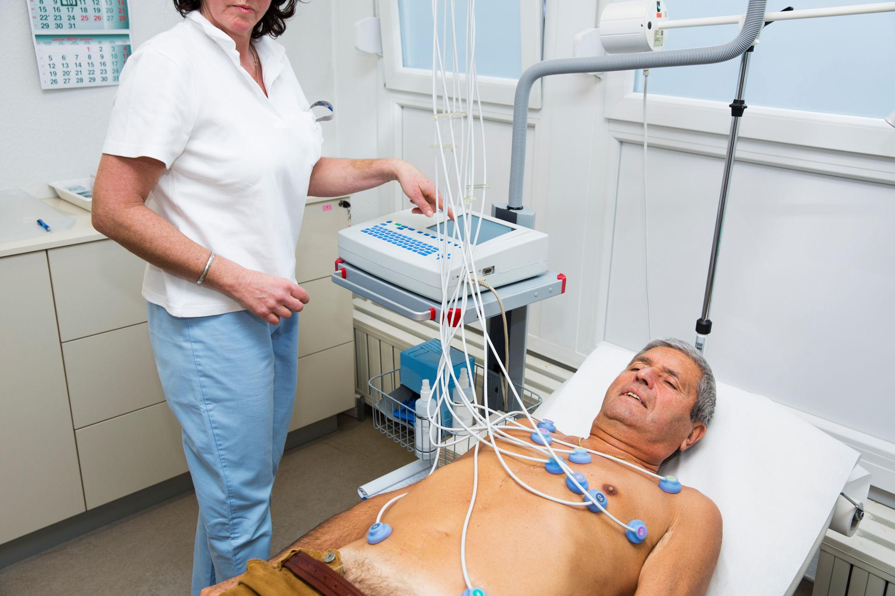
Cardiac HealthPrecision 12-lead electrocardiography capturing electrical conduction, heart rate variability, and ischemia screening with immediate paper reports.
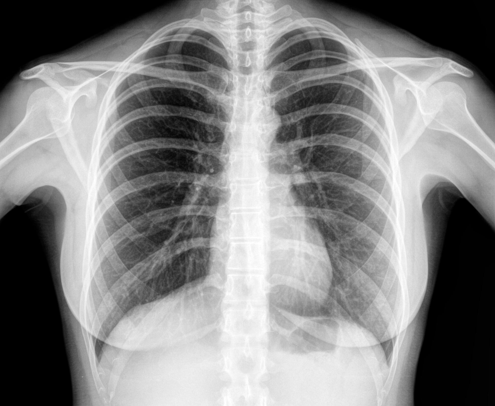
Pulmonary SurveyHigh-definition posteroanterior (PA) and lateral chest radiographs assessing pulmonary parenchyma, cardiac silhouette, diaphragm, and rib cage integrity.
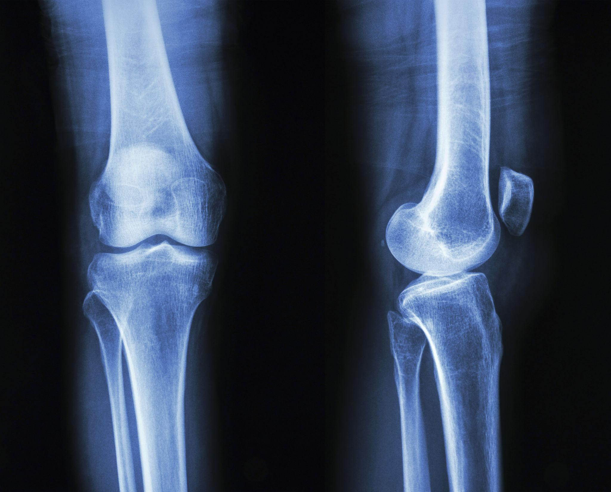
Orthopedic DetailDedicated bone, spine, and joint imaging evaluating fractures, degenerative arthritis, disc spaces, and ligamentous alignment across all extremities.
Comprehensive diagnostic reading utilizing calibrated multi-monitor PACS workstations for complex cross-comparisons and second opinions.
Technology That Supports Better Imaging
Our diagnostic center is powered by clinical-grade radiography units, automated electrocardiographs, and DICOM-calibrated imaging displays.
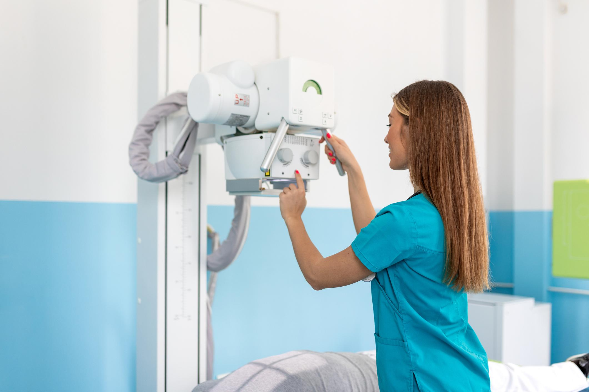
Ceiling-Suspended Digital Radiography
Equipped with motorized collimator tracking, precision laser centering, and low-dose cesium iodide detectors that slash patient radiation exposure while delivering sub-millimeter anatomical resolution.
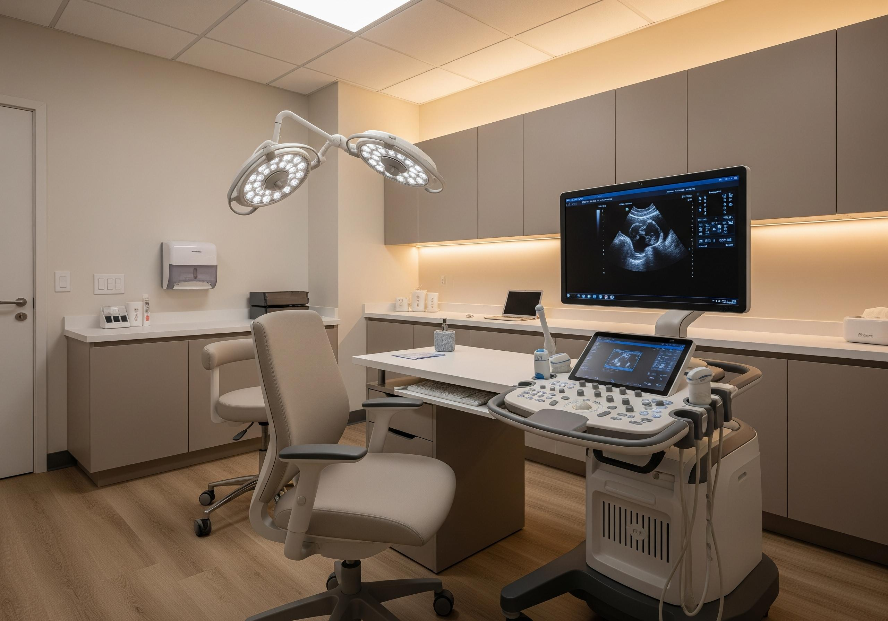
High-Resolution Sonography Suite
Multi-frequency single-crystal transducer probes providing deep acoustic penetration, real-time hemodynamic Doppler analysis, and enhanced tissue differentiation in a serene, hygienic suite.
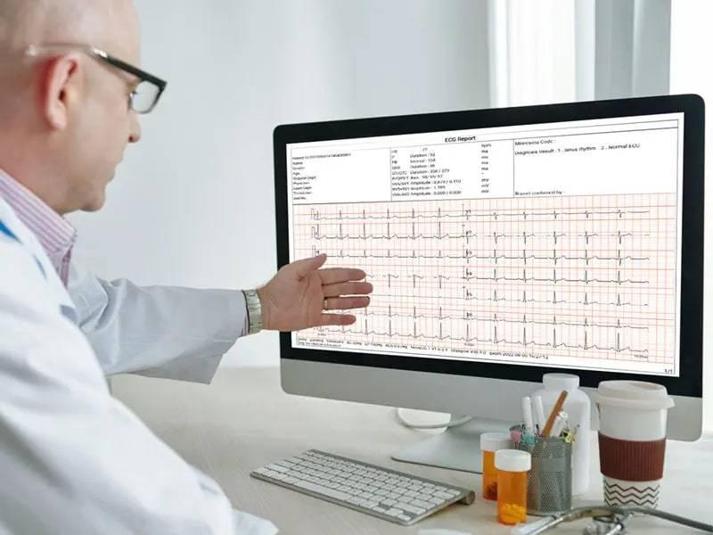
Multi-Channel Digital Electrocardiograph
12-channel automated recording with high-frequency artifact filtering, instantaneous PR/QRS/QTc interval calculations, and synchronized digital reports for acute and routine cardiac screening.
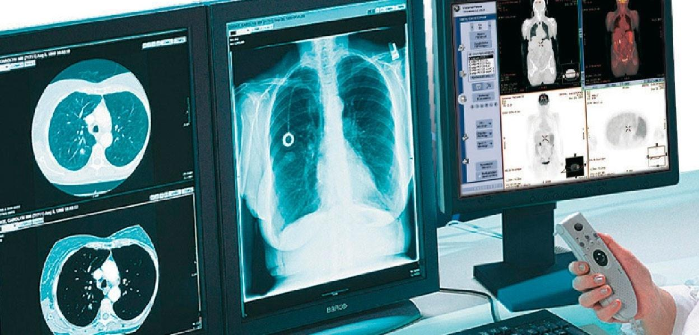
Multi-Monitor PACS Reading Workstation
High-luminance Barco DICOM-calibrated diagnostic viewing station enabling radiologists to evaluate cross-sectional studies, historical radiographs, and multi-slice series with 100% fidelity.
A Diagnostic Experience Built Around Patient Care
We hold ourselves to rigorous clinical standards, ensuring your visit is hygienic, comfortable, transparent, and completely organized.
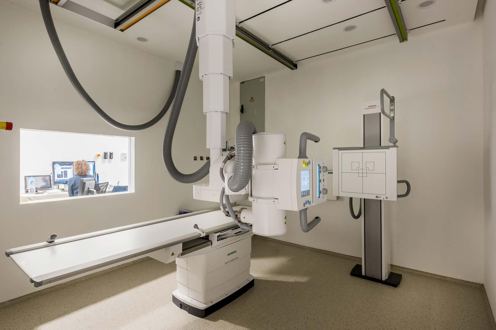
Modern Diagnostic Equipment
Every imaging modality is digitally integrated with low radiation dosing and precise calibration.
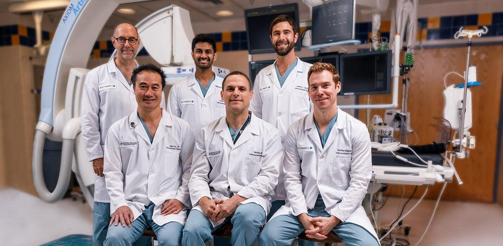
Professional Medical Team
Certified radiologic technologists, experienced sonographers, and seasoned consulting radiologists.

Patient-Friendly Environment
Spacious waiting areas, sanitized examination couches, lead-shielding garments, and private dressing rooms.

Organized Appointment Process
Fast-track scheduling, online slot reservation, minimal wait times, and rapid report turnaround.
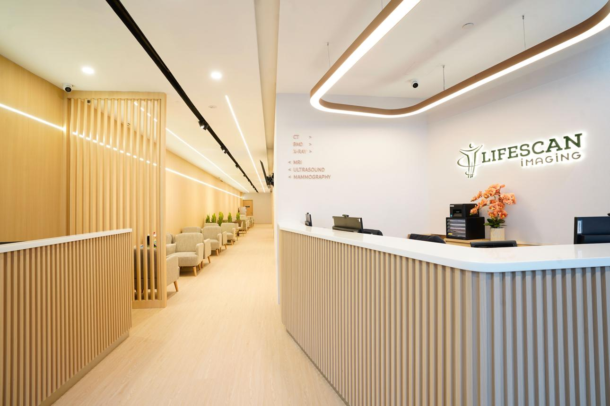
Transparent Diagnostic Pricing
Clear, fixed pricing for single scans and comprehensive packages with zero unexpected charges.
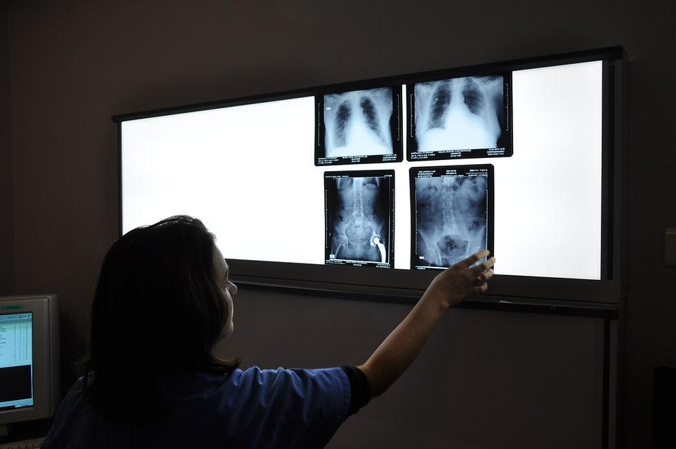
Convenient Service Information
Detailed pre-scan preparation guidelines, doctor referral handling, and secure digital report downloads.
From Appointment to Diagnostic Results
A simple, organized 4-step path ensures you receive accurate imaging without delays.
Select Your Diagnostic Service
Choose the specific X-ray, ultrasound, or ECG test requested by your referring physician.
Schedule Your Appointment
Pick your preferred date and time slot using our instant appointment request portal.
Visit Our Diagnostic Center
Experience a prompt, hygienic scan guided by our licensed radiographers and sonographers.
Receive Your Diagnostic Report
Collect your verified radiologist-signed report and high-resolution digital DICOM files.
Find the Right Diagnostic Package
Carefully curated diagnostic screening packages combining imaging and cardiac evaluations.
Basic Digital Imaging Package
Ideal for general annual health evaluations and occupational chest fitness clearances.
Cardiac Assessment Package
Focused cardiovascular survey evaluating rhythm abnormalities and cardiac silhouette.
Complete Health Screening
Thorough internal organ and skeletal survey suitable for comprehensive routine workups.
Senior Citizen Diagnostic Package
Specialized package addressing age-related joint, pulmonary, and visceral health.
A Comfortable Environment for Every Visit
Medical scans can provoke anxiety. We designed our center to feel calming, respectful, and hygienic from the moment you arrive.
Comfortable Examination Rooms
Spacious, temperature-controlled suites with gentle ambient lighting and absolute privacy.
Organized Reception
Digitally managed queue numbers preventing crowded waiting times and confusion.
Helpful Patient Care Team
Compassionate assistance for senior citizens, children, and mobility-assisted patients.
Sanitized Facilities
Rigid sanitization protocols between every patient examination without compromise.
Clinical Ambience Standard
Engineered for Comfort, Privacy & DignityEvery square meter of our center adheres to stringent healthcare hygiene and ergonomic acoustics, ensuring peaceful waiting and stress-free diagnostics.
Safe, Ultra-Low Radiation Levels
Our high-frequency direct digital systems minimize patient ionizing exposure well below standard environmental thresholds.
Equivalent to just 3 days of natural background radiation exposure. Uses cesium iodide pulsed collimation.
Natural cosmic atmospheric radiation encountered during a standard commercial 7-hour commercial flight.
Average baseline background radiation absorbed annually by every human from natural terrestrial minerals and solar rays.
ASiR-V iterative reconstruction reduces diagnostic volumetric scan dose by up to 80% while retaining bone-soft tissue clarity.
Fast Results & Patient Care Guarantees
Measurable clinical benchmarks engineered to eliminate delays and deliver verifiable diagnostic outcomes.
Instant dry thermal films and digital report generation for all standard chest and orthopedic studies.
Verified through standardized double-blind random peer audit sampling across all modalities.
Every film and sonogram is interpreted and validated exclusively by MD / DNB certified specialists.
Permanent encrypted digital repository with zero-loss image archiving accessible anytime by your physician.